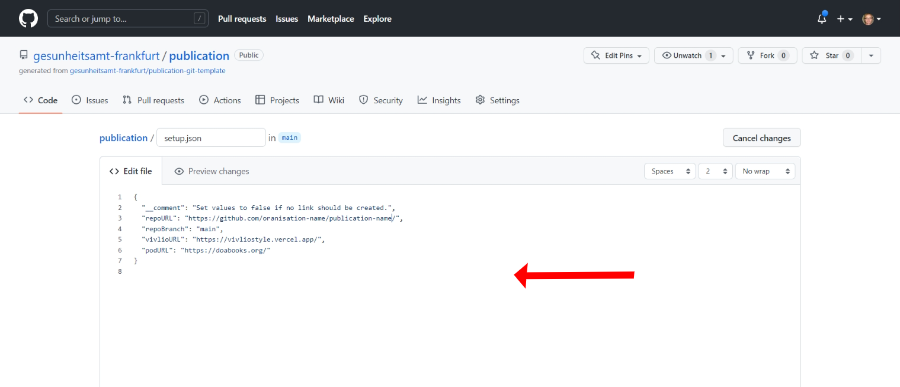
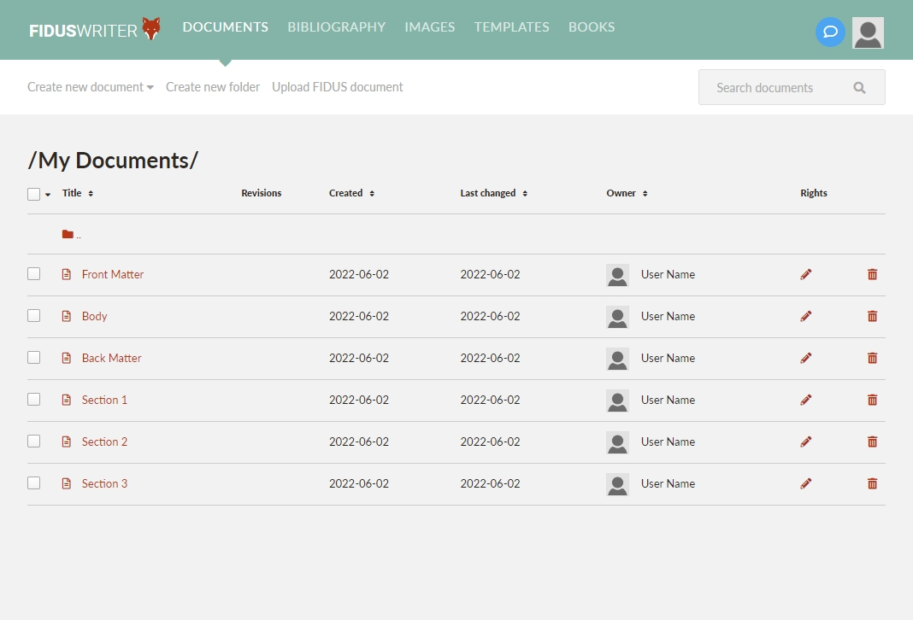

The 'publishing pipeline' connects the word processor to publishing. What this mean for publication production is that from the online multi-user editor you can automatically create and typeset multi-format outputs to file storage or live online - making updates at any time across all format outputs from one single-source. High quality layout designs are enables by combining pre-made 'design templates' with automate machine typesetting. This means that all the time-consuming layout work is taken out of the production time-line enabling a rapid publishing workflow.
This is a quick start guide for you to learn how use the 'publishing pipeline' for making multi-format publications: reports, manuals, books, and papers, etc.
The quick start guide is for contributors and publication managers. Technical administrator and developers, and typesetting layout designers, should see the 'Admin Guide'.
We'll be working with an online collaborative word processor and publishing to multi-format — PDF, web, e-book, mobile, print-on-demand, etc. — all using 'digital sovereign' systems to ensure privacy and security, including: being self-hosted, GDPR compliant, and using open-source software, and more.
What you'll need before you start
See instructions in the 'What You'll Need to Get Started: Account creation' section for creating all the accounts needed.
For contributors
A user account with the online word processors 'Fidus Writer'.
For publication managers
A user account with the online word processor 'Fidus Writer'.
GitLab or/and GitHub accounts, depending on which supported Git platform your using.
Connect 'Fidus Writer' to your Git platform of choice.
Digital sovereignty
The term 'digital sovereignty' is used here to describe the steps taken to ensure privacy of personal information and the security of content because of the encroachment of digital activity by corporations, as well as that of states.
To ensure your 'digital sovereignty' we combine data security measures, adherance to privacy legislation such as European General Data Protection Regulation (GDPR) or California Consumer Privacy Act (CCPA), and transparency of code and data storage.
The system can be self-hosted, is open-source, has full GDPR compliance, uses two factor authentication for admin areas, and OAuth authenication for authentication and authorization infrastructure (AAI) integration.
Pipeline features
Collaborative work space: invite designers, editors, proofers, or reviews to work on the book.
Multi-format publication outputs: website, PDF, paginated web, eBook, and print-on-demand etc.
Automatic typesetting and layout design, so no time consuming typesetting.
Single-source publishing: Make an edit and distribute to all formats.
Citation manager.
Open-source software and 'pipeline architecture' designed for system integration.
What you will learn here:
Account creation for Fidus Writer, GitLab including GitLab.com and GitLab CE, and GitHub.
How to prepare your public Git repository for storing your publication data, with an option to enable a website.
GitLab Pages and GitHub Pages website creation.
To setup your publication's online collaborative word processor.
Invite your team to collaborate on writing online.
How to publish.
The steps used to create a publication
Create a Git repository and website
Create a book (collation of documents)
Invite the team
How to publish multi-format
About enhanced publications
Book data structure (parts of a book)
TBC
Step 1: Make a Publication Git Repository and Website
The Git repository (repo) is the storage location of your outputted publication which is connected to the net. A website can also be made from the repo with a selected content being made public. When your repo is updated, so is your website.
<Add picture example of a. Git Repo and b. website. b is a select presentation of a.>
About
The repository uses Git technology which allows for versioning of your publication.
We save to GitHub and GitLab (Perkel 2016). GitLab can be used as GitLab.com or as a self-hosted instance for public and private publications, or for staging publications for later transfer to another repo. We use GitLab Community Edition (GitLab CE) for self-hosting which is open-source software. GitHub is not open-source but is useful for publication distribution and visibility.
Git logoOctocat: GitHub's mascotGitLab logo
Step-by-step guide
These instructions are for using GitHub. The principles are the same for GitLub.
These steps will allow you to create a repository to for your publication with the option for a website.
Create a repo
Use a GitHub Template Repository (Repo)
You will create a prepopulated GitHub template repository for you publication. The template repo contains componts for creating the website and providing links to the other publication formats in the website.
Navigate to the template repo and click the green button 'Use this template'.
Then choose where you will make the new repo and its name. Once chosen click 'Create repository from this template'.
Where to save your repo? In GitHub you can save repos with organisations or in your personal account, select this under the field labeled 'Owner'.
How to name your repo? The name of the repo will be its display name and URL address. It is good practice to adopt a naming convention style to be inline with other publications, this might be a short title, or even an acronym. Note it is good practice to use only lowercase in the name as the URL is case sensitive. Names can be changed at any time but it will change any associated URLs.
Note: Repo names can be changed at any time, but this will change the website URL to be the new name and you must remember to update the URL in other places where you have used the URL address.
Other settings: You can give the repo a description; make the repo public is the default, and the click greed button.
Create a website
GitHub has a service called GitHub Pages. This creates free websites on the domain github.io or you can use your own custom domain. The default URL address pattern is https://organisation-name.github.io/publication-name/. The content from your repo will be available on the URL.
Note: Websites can be given custom domain names. You will need to consult GitHub documentation to enable this feature.
This is a two step process.
Step 1:
Navigate to 'Settings' in the top horizontal options. In settings on the left menu select 'Pages'. In the dialog in the main page use the following settings: Select branch - main; select folder - root, and; click save. This will complete the site creation and give you a URL for your website. Copy the URL and you can then use it to add address to front end of the repo.
To paste the site name into the front end of your repo first go to the front end of the repo by clicking <code>. To the right click the cog next to About and in here you can paste in the URL and save.
You will now have a website and the address appears top right.
Your website will look like this. Currently the site will contain benchmark content to demonstate that layout features are working correctly. This content will be removed once you output your publication.
Step 2:
To enable the Paginated Web version of your publication the repo address needs to be added to the setup.json file in the top level of your repo.
Edit the file setup.json and add in the organisation name and repo name into line 3 and save at the bottom of the page. "repoURL": "https://github.com/organisation-name/publication-name/".

Step 1 completion: What's next?
Now that you have your repo and website setup, next you will set-up a book project in Fidus Writer and connect it to your Git repo, this will allow you to output book files from Fidus Writer to Git.
Git is open-source software that both GitHub and GitLab are built on – think of it as a 'time machine for code' and all that could do.
The book project in Fidus Writer will act as an empty container for your book, later on you can change all the file names and book information to reflect your books title and content. You can also add and remove documents at any time.
<Setup Steps Progress: Book data structure (parts of a book) - diagram>
<Book data structure (parts of a book)>
Note: Some parts of the book are generated automatically and cannot be edited directly and may depend on book settings, document templates, or book styles, or specific format output filters, these are:
Covers
Table of Contents
Page numbering
Page headers and footers
References and footnotes: Placement as page notes or end notes, citation style
List of figures and tables
Section title pages
Placement of blank pages
Title page, and other front matter content divisions and styles
What's covered here:
Create placeholder documents for your book parts
Create a 'personal' folder (only you see this - it is not shared) for your book documents
Create a Fidus Writer book - a collation of book documents, make divisions into book parts
Book configuration and adding book information and cover
Connecting your Fidus Writer book project to your Git repo
Create placeholder documents for your book parts
Placeholder document examples:
Front Matter: Where you will add imprint, contributor information, acknowledgements, etc.
Section 1: A top level part of a book as section or chapter
Section 2
Section 3
Back Matter: This can contain appendices, glossaries, abbreviations, etc.
Create documents
Navigate to 'Documents' area of the website. In the sub-menu below documents select 'Create new document' and choose 'Book Default' document template. If you are working on a special book or publication series you might use a different document template.
Here you will add three documents as placeholders. These are added so you can configure your book basics, names and documents can be changed or deleted later: Front Matter; Section 1, and; Back Matter.
<add screen shots for document creation: 1. Add, 2. select doc template, 3. document title and document name, 4 Close document, document settings>

FigureAdding documents to be used in your bookFigureEdit document and add a title
Add documents to a folder
Add documents to a book
FigureBook section, add your book here
Configure your book
FigureAdd book information
Add documents to your book
FigureAdd your documents to the book
Connect and export your book to Git
Next steps
Step 3: Invite Your Team
Step 4: Publish Multi‑format!
TableStarter output formats. More formats are available but to start with we'll cover the set below.
Formats
Website
Paginated Web
PDF
Print-on-Demand
eBook
Examples
CS4RL
CS4RL
CS4RL
CS4RL
CS4RL
Features
Mobile first reponsive
Fixed page
Screen
Print from one copy at a time.
Use on e-Readers and distribute through book trade.
Static header / footer
Place in left menu
yes
yes
n /a?
Date (custom formats)
Place in left menu
yes
yes
n /a?
Version (From Fidus book version No.)
Place in left menu
yes
yes
n /a?
Step 5: Enhanced Publications
To enable a publication to findable and have greater impact modern publishing features of 'enhanced publications' developed by in the area of open science need to be used. Open science practice is exemplified by the FAIR Principles (GO FAIR 2016) and fully outlined in the UNESCO Open Science Recommendations (UNESCO 2021).
These are:
Accessibility
Plain language summaries
Multilingual and tranlation ready
Accessible metadata
Machine readable
Open access
Open data
Persistent identifiers - for publications, for related entities (persons, organisations, funders, etc.), and for digital objects.
Linked open data
Controlled vocabularies and schemas
Open standards
Interoperable formats
Software citation
Expanded roles and attribution
Open and accessible metadata
Using a landing page with all publication parts as human readable and machine readable
Accessible metadata
Using inventory packaging
Open citations
Key accessibilty guidelines for the web are: WCAG 2.1 (Web Content Accessibility Guidelines) Web Content Accessibility Guidelines (WCAG) 2.1 covers a wide range of recommendations for making Web content more accessible.
When websites and web tools are properly designed and coded, people with disabilities can use them. However, currently many sites and tools are developed with accessibility barriers that make them difficult or impossible for some people to use.
Making the web accessible benefits individuals, businesses, and society. International web standards define what is needed for accessibility. (W3C Web Accessibiliy Initiative)
GO FAIR, ed. 2016. “FAIR Principles.” 2016. https://www.go-fair.org/fair-principles/.
UNESCO. 2021. “UNESCO Recommendation on Open Science.” https://unesdoc.unesco.org/ark:/48223/pf0000379949?6=null&queryId=N-EXPLORE-6186794e-ad06-46ba-9a10-4913967e2bd1.